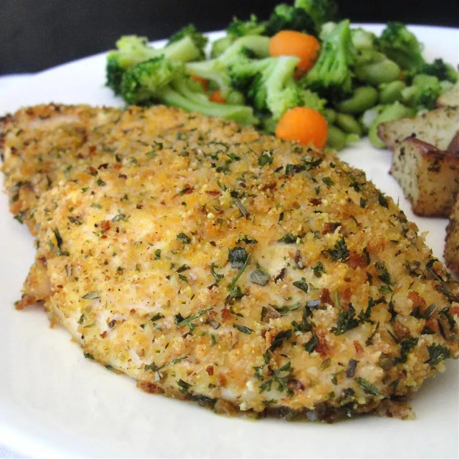

Parmesan Chicken

A bold dish to serve to your guests, easy to prepare and soon to be family favorite!
Prep Time: 10 mins
Cook Time: 20 mins
Total Time: 30 mins
This will yield 6 servings
Ingredients
- 1/2 cup grated parmesan cheese
- 1/4 cup dry bread crumbs
- 1 teaspoon dried oregano
- 1 teaspoon dried parsley
- 1/4 teaspoon paprika
- 1/4 teaspoon salt
- 1/4 teaspoon ground black peper
- 3 tablespoons margarine, melted
- 6 skinless, boneless chicken breast halves
Steps
- Preheat an oven to 400 degrees F (200 degrees C). Spray 9x13 inch baking pan with cooking spray.
- Combine parmesan cheese, dry bread crumbs, oregano, parsley, paprika, salt, and pepper in a shallow bowl. Dip chicken breasts into melted margarine, then coat with bread crumb mixture. Place in prepared pan.
- Bake in preheated oven until chicken breasts are no longer pink in the center and the juices run clear, about 20 minutes to 25 minutes. An instant-read thermometer inserted into the center should read at least 165 degrees F (74 degrees C).
- Take out of oven and plate as you desire!
Back to homepage